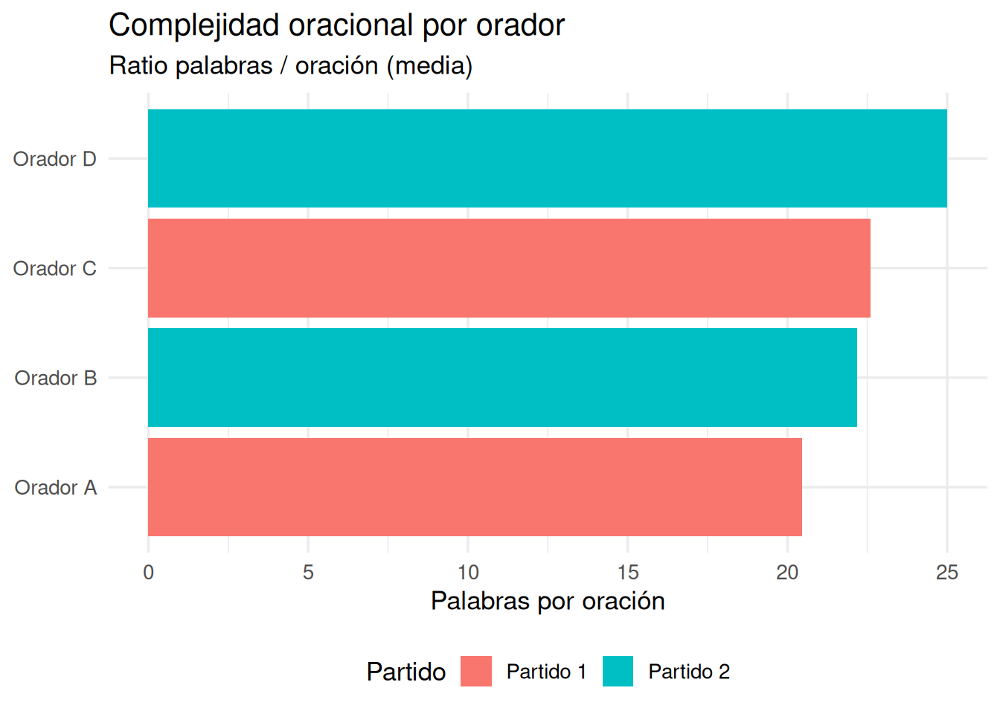

2 + 3[1] 510 / 4[1] 2.52 ^ 8[1] 256sqrt(144)[1] 12R es un lenguaje de programación estadístico diseñado específicamente para el análisis de datos, la estadística y la visualización. A diferencia de Excel, R es reproducible, extensible y gratuito. Los análisis se expresan como código: eso significa que cualquier colega puede replicar exactamente lo que has hecho.
En lingüística, R se usa para análisis de corpus, estadística de frecuencias, modelado de variación lingüística y visualización de patrones en el lenguaje.
Son dos cosas distintas pero complementarias:
La analogía habitual es que R es el motor del coche y RStudio es el salpicadero.
RStudio se organiza en cuatro paneles:
| Panel | Ubicación | Para qué sirve |
|---|---|---|
| Script | Arriba izquierda | Escribir y guardar el código |
| Console | Abajo izquierda | Ver resultados y ejecutar líneas sueltas |
| Environment | Arriba derecha | Ver los objetos creados en la sesión |
| Files / Plots / Packages | Abajo derecha | Gestionar archivos y ver gráficos |
2 + 3[1] 510 / 4[1] 2.52 ^ 8[1] 256sqrt(144)[1] 12sum(1, 2, 3, 4, 5)[1] 15mean(c(1, 2, 3, 4, 5))[1] 3mi_nombre <- "Ana García"
edad <- 23
aprobado <- TRUE
mi_nombre[1] "Ana García"edad + 10[1] 33x <- 3.14
class(x)[1] "numeric"palabra <- "lingüística"
class(palabra)[1] "character"es_sustantivo <- TRUE
class(es_sustantivo)[1] "logical"Ejercicio 1
autor con tu nombre completo entre comillas.anyo_nac con tu año de nacimiento y calcula tu edad: 2025 - anyo_nac.class() sobre cada objeto. ¿Qué tipo de dato devuelve cada uno?Un vector es una colección ordenada de elementos del mismo tipo. Es el bloque fundamental de R: casi todo en R es un vector. Se crean con la función c() (combine).
longitudes <- c(3, 5, 2, 8, 4, 6, 3, 7)
mean(longitudes)[1] 4.75median(longitudes)[1] 4.5max(longitudes)[1] 8length(longitudes)[1] 8palabras <- c("casa", "árbol", "luz", "universidad")
nchar(palabras)[1] 4 5 3 11Un data frame es una tabla: las filas son observaciones y las columnas son variables. Piensa en él como en la hoja de anotación de un corpus: cada fila es una unidad y cada columna es una propiedad anotada.
corpus <- data.frame(
palabra = c("casa", "árbol", "correr", "azul"),
categoria = c("sustantivo", "sustantivo", "verbo", "adjetivo"),
silabas = c(2, 2, 3, 2),
frecuencia = c(8420, 3105, 5622, 4890)
)
corpus palabra categoria silabas frecuencia
1 casa sustantivo 2 8420
2 árbol sustantivo 2 3105
3 correr verbo 3 5622
4 azul adjetivo 2 4890str(corpus)'data.frame': 4 obs. of 4 variables:
$ palabra : chr "casa" "árbol" "correr" "azul"
$ categoria : chr "sustantivo" "sustantivo" "verbo" "adjetivo"
$ silabas : num 2 2 3 2
$ frecuencia: num 8420 3105 5622 4890summary(corpus) palabra categoria silabas frecuencia
Length:4 Length:4 Min. :2.00 Min. :3105
Class :character Class :character 1st Qu.:2.00 1st Qu.:4444
Mode :character Mode :character Median :2.00 Median :5256
Mean :2.25 Mean :5509
3rd Qu.:2.25 3rd Qu.:6322
Max. :3.00 Max. :8420 nrow(corpus)[1] 4ncol(corpus)[1] 4corpus$palabra[1] "casa" "árbol" "correr" "azul" corpus$frecuencia[1] 8420 3105 5622 4890corpus[1, ] palabra categoria silabas frecuencia
1 casa sustantivo 2 8420corpus[, 2][1] "sustantivo" "sustantivo" "verbo" "adjetivo" corpus[2, 3][1] 2corpus[corpus$silabas == 2, ] palabra categoria silabas frecuencia
1 casa sustantivo 2 8420
2 árbol sustantivo 2 3105
4 azul adjetivo 2 4890corpus[corpus$frecuencia > 5000, ] palabra categoria silabas frecuencia
1 casa sustantivo 2 8420
3 correr verbo 3 5622corpus[corpus$categoria == "sustantivo", ] palabra categoria silabas frecuencia
1 casa sustantivo 2 8420
2 árbol sustantivo 2 3105Ejercicio 2
Crea un data frame llamado mi_corpus con al menos 5 palabras de tu elección y las columnas palabra, categoria y longitud.
str(mi_corpus) para inspeccionar la estructura. ¿Qué tipo tiene cada columna?$ y calcula la media.install.packages(c("dplyr", "ggplot2", "readr"))library(dplyr)
library(ggplot2)
library(readr)datos <- read_csv("corpus_discursos.csv")
glimpse(datos)Para esta sesión construimos un dataset de ejemplo directamente:
set.seed(42)
discursos <- data.frame(
orador = rep(c("Orador A", "Orador B", "Orador C", "Orador D"), each = 15),
partido = rep(c("Partido 1", "Partido 2", "Partido 1", "Partido 2"), each = 15),
anyo = sample(2010:2023, 60, replace = TRUE),
n_palabras = round(rnorm(60, mean = 600, sd = 150)),
n_oraciones= round(rnorm(60, mean = 30, sd = 8))
)
glimpse(discursos)Rows: 60
Columns: 5
$ orador <chr> "Orador A", "Orador A", "Orador A", "Orador A", "Orador A"…
$ partido <chr> "Partido 1", "Partido 1", "Partido 1", "Partido 1", "Parti…
$ anyo <int> 2010, 2014, 2010, 2018, 2019, 2013, 2011, 2019, 2010, 2017…
$ n_palabras <dbl> 468, 742, 494, 438, 592, 687, 552, 157, 450, 656, 624, 399…
$ n_oraciones <dbl> 35, 37, 26, 36, 21, 17, 20, 35, 30, 29, 29, 30, 25, 33, 18…discursos |> select(orador, anyo, n_palabras) orador anyo n_palabras
1 Orador A 2010 468
2 Orador A 2014 742
3 Orador A 2010 494
4 Orador A 2018 438
5 Orador A 2019 592
6 Orador A 2013 687
7 Orador A 2011 552
8 Orador A 2019 157
9 Orador A 2010 450
10 Orador A 2017 656
11 Orador A 2016 624
12 Orador A 2013 399
13 Orador A 2018 524
14 Orador A 2014 76
15 Orador A 2023 825
16 Orador B 2013 694
17 Orador B 2019 606
18 Orador B 2011 645
19 Orador B 2012 483
20 Orador B 2018 558
21 Orador B 2018 867
22 Orador B 2020 693
23 Orador B 2013 174
24 Orador B 2014 747
25 Orador B 2022 582
26 Orador B 2014 614
27 Orador B 2013 544
28 Orador B 2011 742
29 Orador B 2021 566
30 Orador B 2017 634
31 Orador C 2012 560
32 Orador C 2019 867
33 Orador C 2010 689
34 Orador C 2019 639
35 Orador C 2017 830
36 Orador C 2023 630
37 Orador C 2020 419
38 Orador C 2015 647
39 Orador C 2019 390
40 Orador C 2017 716
41 Orador C 2013 736
42 Orador C 2013 839
43 Orador C 2015 444
44 Orador C 2011 532
45 Orador C 2022 560
46 Orador D 2021 714
47 Orador D 2014 316
48 Orador D 2013 670
49 Orador D 2011 619
50 Orador D 2017 472
51 Orador D 2011 462
52 Orador D 2012 529
53 Orador D 2017 466
54 Orador D 2016 567
55 Orador D 2010 593
56 Orador D 2014 436
57 Orador D 2019 635
58 Orador D 2011 710
59 Orador D 2015 764
60 Orador D 2015 503discursos |> filter(anyo >= 2018) orador partido anyo n_palabras n_oraciones
1 Orador A Partido 1 2018 438 36
2 Orador A Partido 1 2019 592 21
3 Orador A Partido 1 2019 157 35
4 Orador A Partido 1 2018 524 25
5 Orador A Partido 1 2023 825 18
6 Orador B Partido 2 2019 606 27
7 Orador B Partido 2 2018 558 44
8 Orador B Partido 2 2018 867 37
9 Orador B Partido 2 2020 693 23
10 Orador B Partido 2 2022 582 13
11 Orador B Partido 2 2021 566 31
12 Orador C Partido 1 2019 867 22
13 Orador C Partido 1 2019 639 23
14 Orador C Partido 1 2023 630 37
15 Orador C Partido 1 2020 419 31
16 Orador C Partido 1 2019 390 21
17 Orador C Partido 1 2022 560 21
18 Orador D Partido 2 2021 714 27
19 Orador D Partido 2 2019 635 32discursos |> mutate(palabras_por_oracion = n_palabras / n_oraciones) orador partido anyo n_palabras n_oraciones palabras_por_oracion
1 Orador A Partido 1 2010 468 35 13.371429
2 Orador A Partido 1 2014 742 37 20.054054
3 Orador A Partido 1 2010 494 26 19.000000
4 Orador A Partido 1 2018 438 36 12.166667
5 Orador A Partido 1 2019 592 21 28.190476
6 Orador A Partido 1 2013 687 17 40.411765
7 Orador A Partido 1 2011 552 20 27.600000
8 Orador A Partido 1 2019 157 35 4.485714
9 Orador A Partido 1 2010 450 30 15.000000
10 Orador A Partido 1 2017 656 29 22.620690
11 Orador A Partido 1 2016 624 29 21.517241
12 Orador A Partido 1 2013 399 30 13.300000
13 Orador A Partido 1 2018 524 25 20.960000
14 Orador A Partido 1 2014 76 33 2.303030
15 Orador A Partido 1 2023 825 18 45.833333
16 Orador B Partido 2 2013 694 38 18.263158
17 Orador B Partido 2 2019 606 27 22.444444
18 Orador B Partido 2 2011 645 40 16.125000
19 Orador B Partido 2 2012 483 22 21.954545
20 Orador B Partido 2 2018 558 44 12.681818
21 Orador B Partido 2 2018 867 37 23.432432
22 Orador B Partido 2 2020 693 23 30.130435
23 Orador B Partido 2 2013 174 24 7.250000
24 Orador B Partido 2 2014 747 22 33.954545
25 Orador B Partido 2 2022 582 13 44.769231
26 Orador B Partido 2 2014 614 37 16.594595
27 Orador B Partido 2 2013 544 39 13.948718
28 Orador B Partido 2 2011 742 28 26.500000
29 Orador B Partido 2 2021 566 31 18.258065
30 Orador B Partido 2 2017 634 24 26.416667
31 Orador C Partido 1 2012 560 30 18.666667
32 Orador C Partido 1 2019 867 22 39.409091
33 Orador C Partido 1 2010 689 42 16.404762
34 Orador C Partido 1 2019 639 23 27.782609
35 Orador C Partido 1 2017 830 31 26.774194
36 Orador C Partido 1 2023 630 37 17.027027
37 Orador C Partido 1 2020 419 31 13.516129
38 Orador C Partido 1 2015 647 32 20.218750
39 Orador C Partido 1 2019 390 21 18.571429
40 Orador C Partido 1 2017 716 43 16.651163
41 Orador C Partido 1 2013 736 21 35.047619
42 Orador C Partido 1 2013 839 23 36.478261
43 Orador C Partido 1 2015 444 40 11.100000
44 Orador C Partido 1 2011 532 36 14.777778
45 Orador C Partido 1 2022 560 21 26.666667
46 Orador D Partido 2 2021 714 27 26.444444
47 Orador D Partido 2 2014 316 28 11.285714
48 Orador D Partido 2 2013 670 27 24.814815
49 Orador D Partido 2 2011 619 17 36.411765
50 Orador D Partido 2 2017 472 47 10.042553
51 Orador D Partido 2 2011 462 22 21.000000
52 Orador D Partido 2 2012 529 13 40.692308
53 Orador D Partido 2 2017 466 15 31.066667
54 Orador D Partido 2 2016 567 35 16.200000
55 Orador D Partido 2 2010 593 28 21.178571
56 Orador D Partido 2 2014 436 19 22.947368
57 Orador D Partido 2 2019 635 32 19.843750
58 Orador D Partido 2 2011 710 15 47.333333
59 Orador D Partido 2 2015 764 29 26.344828
60 Orador D Partido 2 2015 503 26 19.346154discursos |>
filter(anyo >= 2018) |>
select(orador, partido, n_palabras) |>
mutate(palabras_k = round(n_palabras / 1000, 2)) |>
arrange(desc(n_palabras)) orador partido n_palabras palabras_k
1 Orador B Partido 2 867 0.87
2 Orador C Partido 1 867 0.87
3 Orador A Partido 1 825 0.82
4 Orador D Partido 2 714 0.71
5 Orador B Partido 2 693 0.69
6 Orador C Partido 1 639 0.64
7 Orador D Partido 2 635 0.64
8 Orador C Partido 1 630 0.63
9 Orador B Partido 2 606 0.61
10 Orador A Partido 1 592 0.59
11 Orador B Partido 2 582 0.58
12 Orador B Partido 2 566 0.57
13 Orador C Partido 1 560 0.56
14 Orador B Partido 2 558 0.56
15 Orador A Partido 1 524 0.52
16 Orador A Partido 1 438 0.44
17 Orador C Partido 1 419 0.42
18 Orador C Partido 1 390 0.39
19 Orador A Partido 1 157 0.16discursos |>
summarise(
media_palabras = mean(n_palabras),
mediana_palabras = median(n_palabras),
total_discursos = n()
) media_palabras mediana_palabras total_discursos
1 579.7833 592.5 60discursos |>
group_by(partido) |>
summarise(
media = round(mean(n_palabras), 1),
n_disc = n()
) |>
arrange(desc(media))# A tibble: 2 × 3
partido media n_disc
<chr> <dbl> <int>
1 Partido 2 587. 30
2 Partido 1 573. 30discursos |> count(orador, sort = TRUE) orador n
1 Orador A 15
2 Orador B 15
3 Orador C 15
4 Orador D 15ggplot(discursos, aes(x = n_palabras)) +
geom_histogram(bins = 20, fill = "#c8102e", color = "white") +
labs(
title = "Distribución de longitud de discursos",
x = "Número de palabras",
y = "Frecuencia"
) +
theme_minimal()
discursos |>
count(orador) |>
ggplot(aes(x = reorder(orador, n), y = n, fill = orador)) +
geom_col() +
coord_flip() +
labs(title = "Discursos por orador", x = NULL, y = "N") +
theme_minimal() +
theme(legend.position = "none")
Ejercicio 3
group_by() y summarise().ratio (palabras / oraciones).En esta parte integramos todo lo aprendido en un pipeline completo aplicado a un corpus de discursos políticos.
summary(discursos) orador partido anyo n_palabras
Length:60 Length:60 Min. :2010 Min. : 76.0
Class :character Class :character 1st Qu.:2013 1st Qu.:480.2
Mode :character Mode :character Median :2015 Median :592.5
Mean :2015 Mean :579.8
3rd Qu.:2018 3rd Qu.:690.0
Max. :2023 Max. :867.0
n_oraciones
Min. :13.00
1st Qu.:22.00
Median :28.00
Mean :28.38
3rd Qu.:35.00
Max. :47.00 resumen <- discursos |>
group_by(orador, partido) |>
summarise(
n_discursos = n(),
media_palabras = round(mean(n_palabras), 1),
media_oraciones = round(mean(n_oraciones), 1),
ratio_pal_or = round(mean(n_palabras / n_oraciones), 2),
.groups = "drop"
)
resumen# A tibble: 4 × 6
orador partido n_discursos media_palabras media_oraciones ratio_pal_or
<chr> <chr> <int> <dbl> <dbl> <dbl>
1 Orador A Partido 1 15 512. 28.1 20.4
2 Orador B Partido 2 15 610. 29.9 22.2
3 Orador C Partido 1 15 633. 30.2 22.6
4 Orador D Partido 2 15 564. 25.3 25 resumen |>
arrange(desc(ratio_pal_or)) |>
select(orador, partido, ratio_pal_or)# A tibble: 4 × 3
orador partido ratio_pal_or
<chr> <chr> <dbl>
1 Orador D Partido 2 25
2 Orador C Partido 1 22.6
3 Orador B Partido 2 22.2
4 Orador A Partido 1 20.4ggplot(resumen,
aes(x = reorder(orador, ratio_pal_or),
y = ratio_pal_or,
fill = partido)) +
geom_col() +
coord_flip() +
labs(
title = "Complejidad oracional por orador",
subtitle = "Ratio palabras / oración (media)",
x = NULL,
y = "Palabras por oración",
fill = "Partido"
) +
theme_minimal(base_size = 13) +
theme(legend.position = "bottom")
discursos |>
group_by(anyo) |>
summarise(media_longitud = mean(n_palabras), n = n()) |>
ggplot(aes(x = anyo, y = media_longitud)) +
geom_line(color = "#c8102e", linewidth = 1) +
geom_point(color = "#c8102e", size = 2.5) +
labs(
title = "Evolución de la longitud media de discursos",
x = "Año",
y = "Palabras (media)"
) +
theme_minimal()
Ejercicio final
Elige una de estas preguntas y produce un gráfico que la responda:
geom_line().fill = partido.Para cada gráfico: añade título, etiquetas de ejes y escribe dos frases interpretando el resultado.
En esta parte trabajamos con un corpus real de transcripciones de discursos políticos sobre inmigración en España. Los textos están anonimizados y alojados en GitHub. El código es completamente reproducible: cualquier estudiante puede ejecutarlo y obtener los mismos resultados.
library(dplyr)
library(readr)
library(stringr)
library(purrr)
base_url <- "https://raw.githubusercontent.com/AritzUMA/runav/main/discursos/"
archivos <- c(
"VOX_1.txt", "VOX_2.txt", "VOX_3.txt", "VOX_4.txt",
"VOX_5.txt", "VOX_6.txt", "VOX_7.txt",
"PODEMOS_1.txt", "PODEMOS_2.txt", "PODEMOS_3.txt",
"PODEMOS_4.txt", "PODEMOS_5.txt"
)
leer_discurso <- function(archivo) {
url <- paste0(base_url, archivo)
texto <- read_lines(url) |> paste(collapse = " ")
partido <- str_extract(archivo, "^[A-Z]+")
id <- str_remove(archivo, "\\.txt$")
tibble(
id = id,
partido = partido,
texto = texto,
n_palabras = str_count(texto, "\\S+"),
n_chars = nchar(texto)
)
}
corpus_real <- map(archivos, leer_discurso) |> list_rbind()
corpus_real |> select(id, partido, n_palabras, n_chars)# A tibble: 12 × 4
id partido n_palabras n_chars
<chr> <chr> <int> <int>
1 VOX_1 VOX 1823 10474
2 VOX_2 VOX 228 1383
3 VOX_3 VOX 176 1047
4 VOX_4 VOX 423 2540
5 VOX_5 VOX 475 2733
6 VOX_6 VOX 153 878
7 VOX_7 VOX 300 1690
8 PODEMOS_1 PODEMOS 13350 75955
9 PODEMOS_2 PODEMOS 112 670
10 PODEMOS_3 PODEMOS 179 1019
11 PODEMOS_4 PODEMOS 361 1943
12 PODEMOS_5 PODEMOS 229 1340corpus_real |>
group_by(partido) |>
summarise(
n_discursos = n(),
media_palabras = round(mean(n_palabras), 0),
total_palabras = sum(n_palabras),
.groups = "drop"
)# A tibble: 2 × 4
partido n_discursos media_palabras total_palabras
<chr> <int> <dbl> <int>
1 PODEMOS 5 2846 14231
2 VOX 7 511 3578ggplot(corpus_real, aes(x = partido, y = n_palabras, fill = partido)) +
geom_boxplot(alpha = 0.7) +
geom_jitter(width = 0.15, size = 2, alpha = 0.6) +
scale_fill_manual(values = c("PODEMOS" = "#6a0dad", "VOX" = "#2e7d32")) +
labs(
title = "Longitud de los discursos por partido",
subtitle = "Número de palabras por transcripción",
x = NULL,
y = "Número de palabras"
) +
theme_minimal(base_size = 13) +
theme(legend.position = "none")
Ejercicio 5
palabras_por_char dividiendo n_palabras entre n_chars. ¿Qué partido usa palabras más largas?| Recurso | Descripción |
|---|---|
| R for Data Science | Manual de referencia, gratuito online |
| Text Mining with R | Análisis de texto con tidytext |
quanteda |
Lingüística de corpus en R |
udpipe |
Anotación morfosintáctica multilingüe |
| Posit Community | Foro oficial de la comunidad R |
Una vez superado el nivel introductorio, puedes explorar otros entornos:
| IDE | Descripción | Ideal para |
|---|---|---|
| RStudio | El estándar para R. Gratuito y completo | Quien trabaja solo con R |
| Positron | Sucesor de RStudio, también de Posit. Aún en beta | R + Python en el mismo entorno |
| VS Code | Editor generalista muy popular. Requiere extensión R | Perfiles más técnicos |
| Jupyter | Notebooks interactivos. Muy usado en ciencia de datos | Análisis exploratorio y docencia |
| Neovim/Emacs | Editores avanzados para usuarios expertos | Perfiles con experiencia en terminal |